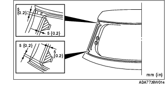
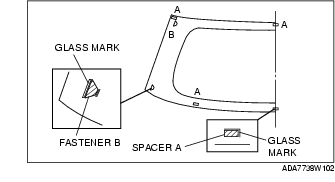
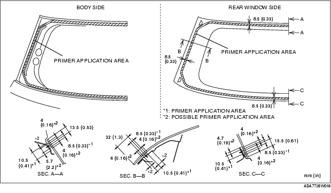
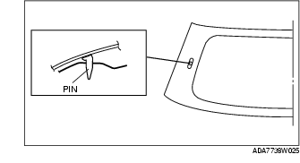

Rear window glass installation
- • To prevent the sealant from cracking or the glass from being pushed out by air pressure if a door is closed, open all of the windows and leave them open until the sealant has hardened.
1. Cut away the old sealant using a razor so that 1-2 mm {0.040-0.078 in} thickness of sealant remains along the perimeter of the frame.
2. If the sealant has come off completely in any one place, apply some primer after degreasing, and allow it approx. 30 min to dry. Then put on new sealant to create a 2 mm {0.08 in} layer.
3. Clean and degrease an approx. 50 mm {2.0 in} wide strip along the perimeter of the glass and the bonding area on the body.
4. Install fasteners to the body as shown in the figure.

5. Install spacers A and fasteners B to the glass as shown in the figure.

6. Use only glass primer on the glass, and body primer on the body and the molding. Allow it to dry for approx. 30 min.
- • Keep the area free of dirt and grease, and do not touch the surface or the primer may not properly bond to the surface of the glass and body, which may cause leaks to occur.

7. Apply sealant to the area of the glass surface as shown in the figure.

8. Insert the positioning pins to the body, then install the rear window glass.

9. Verify that the gap at the upper part and the lower part of the glass is 2.5 mm {0.1 in}, and the gap at the pillar is 6 mm {0.24 in}.

10. Install the rear wiper motor.
11. Install the rear wiper arm and blade. (See REAR WIPER ARM AND BLADE REMOVAL/INSTALLATION.)
12. Install the liftgate trim.
13. Allow the sealant to harden completely.